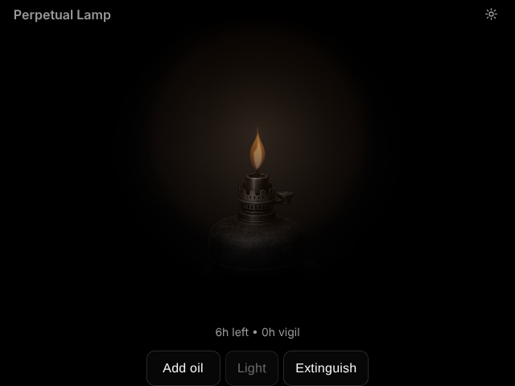

Perpetual Lamp
a lamp to tend

A digital oil lamp to keep alight. Add oil, light the flame and tend it. Each measure of oil burns for six hours and the lamp holds a day's worth. It burns whether or not the page is open, so keeping it lit means coming back.
The Long Watch shows how many other lamps are burning tonight, and the longest and average unbroken vigils among them.
Browser
Open the lampRuns in any modern browser. Add it to your home screen to keep it close; it works offline once opened, though The Long Watch needs a connection.
Notes
Your lamp lives in this browser. Clearing the site's data puts it out for good. To take part in The Long Watch, it reports only whether it is lit, for how long and how much oil is left, under a random ID.
Perpetual Lamp is freeware.